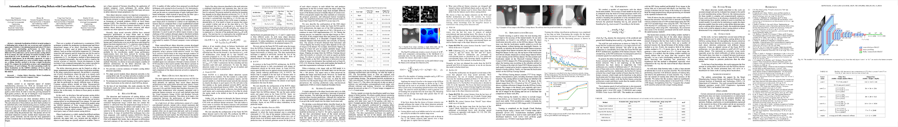

Automatic Localization of Casting Defects
In this project, we aim to leverage recent advances in computer vision to create a system for automatic detection of casting defects. We demonstrate that the system can be used to detect defects in a range of other defects in metal materials.
The output of the defect detection system. In this case, the model returns the coordinates of three bounding boxes containing defects
Architecture
The proposed defect detection system is based on the Mask R-CNN architecture [1]. We use the ResNet-101 convolutional neural network to generate a featurized representation of input images. These featurized images are passed into a Region Proposal Network, which selects 300 regions in the image that might contain defects. Each of these regions are analyzed using a separate Region-based Detector. The Region-based Detector returns the class of the defect, as well as the fine-tuned bounding box coordinates.
A grid of anchors. Each anchor is evaluated by the Region Proposal Network to determine if it is likely to contain a casting defect
The input to the system is a three-dimensional array of image pixels, in RGB. The input image can have any size, but we choose to resize the image to have a maximum side length of 600 px. The output is a list of bounding box coordinates.
Dataset
We train and test the Faster R-CNN model using the images from the GDXray Castings dataset. Images are scaled to 600 pixels on the shorter edge. Additionally, we randomly flip the images horizontally at training time. This data augmentation technique is applied to artificially increase the size of the training dataset. We do not apply any other form of preprocessing to the images at training or testing time.
Paper

Automatic Localization of Casting Defects using Convolutional Neural Networks
M. Ferguson, R. Ak, Y. T. Tina Lee, K. H. Law
[Paper]